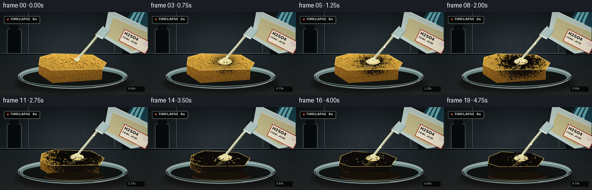
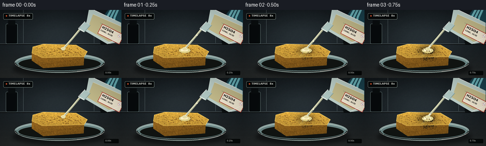

CODING AGENTS AS PIXEL WORLD MODELS
traex/GPT-5.6-Sol · phygen_155
点击播放 · 原生 RGB 像素
逐轮保存的候选
回放视频、检查图与代码变化。
每份候选均可单独播放。实际图片检查记录在下方工具轨迹中。
候选 01播放与检查图
点击播放 · 原生 RGB 像素
展开代码变化
--- 上一保存版本
+++ 本次保存版本
@@ -0,0 +1,354 @@
+from pathlib import Path
+import math
+import numpy as np
+import cv2
+from PIL import Image, ImageDraw, ImageFont, ImageFilter
+import artifact_io
+
+# Procedural RGB video renderer for the requested chemistry timelapse.
+# All geometry is generated from scratch; supersampling keeps the tiny output crisp.
+W, H, N, FPS = 256, 144, 20, 4.0
+S = 4
+WW, HH = W*S, H*S
+ROOT = Path(__file__).resolve().parent
+rng_static = np.random.default_rng(155)
+FONT = "/usr/share/fonts/truetype/dejavu/DejaVuSans.ttf"
+FONT_B = "/usr/share/fonts/truetype/dejavu/DejaVuSans-Bold.ttf"
+
+def sc(v): return int(round(v*S))
+def pts(arr): return [(sc(x), sc(y)) for x,y in arr]
+def font(sz, bold=False):
+ return ImageFont.truetype(FONT_B if bold else FONT, sc(sz))
+
+def smooth(a,b,x):
+ x=np.clip((x-a)/(b-a),0,1); return x*x*(3-2*x)
+
+def poly_mask(poly):
+ m=np.zeros((HH,WW),np.uint8)
+ cv2.fillPoly(m,[np.array(pts(poly),np.int32)],255,cv2.LINE_AA)
+ return m
+
+def alpha_comp(base, overlay):
+ return Image.alpha_composite(base.convert('RGBA'), overlay.convert('RGBA'))
+
+def blurred_shape(size, draw_fn, blur):
+ lay=Image.new('RGBA',size,(0,0,0,0)); d=ImageDraw.Draw(lay); draw_fn(d)
+ return lay.filter(ImageFilter.GaussianBlur(sc(blur)))
+
+# Stable pores in normalized sponge coordinates.
+pores=[]
+for _ in range(125):
+ u,v=rng_static.random(2)
+ r=rng_static.uniform(.45,1.55)
+ pores.append((u,v,r,rng_static.uniform(.55,1.45)))
+
+# Fine film grain remains spatially stable, avoiding distracting random flicker.
+noise = rng_static.normal(0,1,(HH,WW)).astype(np.float32)
+noise = cv2.GaussianBlur(noise,(0,0),0.55*S)
+noise = noise/(noise.std()+1e-6)
+Y,X=np.mgrid[0:HH,0:WW].astype(np.float32)
+x=X/S; y=Y/S
+
+
+def background(t):
+ # Cool laboratory backdrop and a subtly reflective graphite worktop.
+ arr=np.zeros((HH,WW,3),np.float32)
+ gy=np.clip(y/144,0,1)
+ arr[:,:,0]=17+11*gy; arr[:,:,1]=23+13*gy; arr[:,:,2]=27+14*gy
+ # soft pool of teal-grey light behind experiment
+ glow=np.exp(-(((x-122)/105)**2+((y-55)/58)**2)*1.3)
+ arr += glow[:,:,None]*np.array([17,20,21],np.float32)
+ # bench starts at y=72
+ bench=np.clip((y-72)/72,0,1)
+ arr = arr*(1-bench[:,:,None]) + (np.dstack([
+ 31+10*bench, 35+10*bench, 36+9*bench]))*bench[:,:,None]
+ # horizontal brushed-steel streaks
+ arr += ((np.sin(y*1.9)+np.sin(y*.51))*0.7*bench)[:,:,None]
+ arr += noise[:,:,None]*0.65
+ return Image.fromarray(np.uint8(np.clip(arr,0,255)),'RGB').convert('RGBA')
+
+
+def draw_background_details(im):
+ d=ImageDraw.Draw(im,'RGBA')
+ # tile/fume hood seams and bench horizon
+ d.line(pts([(0,71.5),(256,71.5)]),fill=(127,143,145,60),width=sc(.45))
+ d.line(pts([(0,73),(256,73)]),fill=(0,0,0,75),width=sc(1.0))
+ d.line(pts([(49,0),(49,70)]),fill=(109,128,132,19),width=sc(.5))
+ d.line(pts([(198,0),(198,70)]),fill=(109,128,132,14),width=sc(.5))
+ # Out-of-focus reagent silhouettes establish a lab, without clutter.
+ d.rounded_rectangle((sc(12),sc(29),sc(37),sc(72)),radius=sc(3),fill=(7,11,13,92),outline=(85,103,105,28),width=sc(1))
+ d.rectangle((sc(17),sc(22),sc(32),sc(32)),fill=(10,14,16,95))
+ d.rounded_rectangle((sc(211),sc(45),sc(231),sc(72)),radius=sc(2),fill=(11,16,17,70))
+ # soft reflected patch under dish
+ shadow=blurred_shape((WW,HH),lambda q:q.ellipse((sc(26),sc(107),sc(226),sc(142)),fill=(0,0,0,120)),4)
+ im.alpha_composite(shadow)
+
+
+def draw_dish_back(im):
+ d=ImageDraw.Draw(im,'RGBA')
+ # liquid/glass interior and back rim, placed behind sponge
+ d.ellipse((sc(31),sc(91),sc(220),sc(132)),fill=(111,142,143,18),outline=(205,230,226,82),width=sc(1.1))
+ d.arc((sc(34),sc(94),sc(217),sc(128)),185,355,fill=(224,244,240,130),width=sc(1.0))
+ d.ellipse((sc(39),sc(99),sc(212),sc(128)),fill=(17,21,19,28))
+ d.arc((sc(39),sc(99),sc(212),sc(128)),185,355,fill=(79,98,96,65),width=sc(.7))
+
+
+def sponge_geometry(q):
+ # q is reaction/collapse progress. The mass contracts and sags nonuniformly.
+ collapse=smooth(.42,1,q)
+ # initial perspective slab -> smaller, irregular charred lump
+ top0=np.array([(69,78),(91,72),(160,74),(184,88),(177,99),(89,101),(67,91)],float)
+ top1=np.array([(78,86),(99,79),(154,80),(173,90),(162,101),(94,104),(76,96)],float)
+ top=(1-collapse)*top0+collapse*top1
+ # gentle organic undulation increases with reaction
+ top[:,1] += collapse*np.array([0,-1.8,1.0,-.9,1.8,-.4,1.2])
+ front0=np.array([(89,101),(177,99),(176,117),(91,123),(67,107),(67,91)],float)
+ front1=np.array([(94,104),(162,101),(160,114),(98,119),(76,106),(76,96)],float)
+ front=(1-collapse)*front0+collapse*front1
+ return top,front,collapse
+
+
+def textured_polygon(base, mask, c1, c2, light_axis=.0, charfield=None):
+ # Surface material with directional light, stable mottling and optional reaction blending.
+ shade=(0.66+0.34*np.clip(1-(y-68)/65,0,1) + light_axis*np.clip((x-50)/160,0,1))
+ tex=np.clip(1 + .055*noise, .82,1.16)
+ col=np.empty((HH,WW,4),np.uint8)
+ rgb=np.array(c1,dtype=np.float32)[None,None,:]*shade[:,:,None]*tex[:,:,None]
+ if charfield is not None:
+ f=np.clip(charfield,0,1)[:,:,None]
+ target=np.array(c2,dtype=np.float32)[None,None,:]*(.86+.14*tex[:,:,None])
+ rgb=rgb*(1-f)+target*f
+ col[:,:,:3]=np.uint8(np.clip(rgb,0,255)); col[:,:,3]=mask
+ base.alpha_composite(Image.fromarray(col,'RGBA'))
+
+
+def draw_sponge(im, q, fi):
+ top,front,collapse=sponge_geometry(q)
+ topm=poly_mask(top); frontm=poly_mask(front)
+ # Reaction field expands from the wet impact point and favors channels/pores.
+ dtop=np.sqrt(((x-133)/64)**2+((y-86)/27)**2)
+ mott=.13*noise + .055*np.sin(x*.42+y*.33)+.04*np.sin(x*.17-y*.71)
+ frontier=q*1.48 - dtop + mott
+ char=np.clip(frontier*3.1,0,1)
+ # central fresh-acid contact becomes dark almost immediately
+ wet=smooth(.03,.20,q)*np.exp(-(((x-132)/18)**2+((y-85)/10)**2))
+ char=np.maximum(char,wet*.73)
+ dfront=np.sqrt(((x-133)/72)**2+((y-99)/35)**2)
+ charfront=np.clip((q*1.25-dfront+.10*noise)*3.0,0,1)
+ # Deep side and warm top cellulose; late char is neutral black with warm edges.
+ textured_polygon(im,frontm,(177,123,38),(18,15,12),-.12,charfront)
+ textured_polygon(im,topm,(224,177,66),(13,12,10),.05,char)
+ d=ImageDraw.Draw(im,'RGBA')
+ # Crisp top rim highlights surviving on unreacted cellulose.
+ d.line(pts(top.tolist()+[tuple(top[0])]),fill=(255,218,113,int(95*(1-q))),width=sc(.65),joint='curve')
+ # Sponge pores, all clipped conceptually by choosing points well within slab.
+ for i,(u,v,r,aspect) in enumerate(pores):
+ px=76+u*96; py=79+v*18
+ # move with collapse toward center
+ px=px*(1-collapse*.12)+128*(collapse*.12); py+=collapse*(5+2*math.sin(i))
+ dist=math.sqrt(((px-133)/64)**2+((py-86)/27)**2)
+ local=np.clip((q*1.48-dist)*3.1,0,1)
+ # pores turn glossy black earlier than the surrounding cellulose
+ basec=np.array([126,82,24])*(1-local)+np.array([3,4,3])*local
+ a=int(145+55*(1-local))
+ rr=r*(1-.18*collapse)
+ box=(sc(px-rr*aspect),sc(py-rr*.55),sc(px+rr*aspect),sc(py+rr*.55))
+ d.ellipse(box,fill=tuple(np.uint8(basec).tolist())+(a,))
+ if local<.45:
+ d.arc(box,190,345,fill=(255,220,120,int(75*(1-local))),width=sc(.25))
+ # side/front pores
+ for i in range(28):
+ u=((i*0.6180339)%1); v=((i*0.381966)%1)
+ px=84+u*88; py=103+v*14+collapse*1.5
+ dist=math.sqrt(((px-133)/72)**2+((py-99)/35)**2)
+ loc=np.clip((q*1.25-dist)*3,0,1)
+ c=np.array([107,68,17])*(1-loc)+np.array([4,4,3])*loc
+ d.ellipse((sc(px-1.1),sc(py-.45),sc(px+1.1),sc(py+.45)),fill=tuple(np.uint8(c).tolist())+(150,))
+ # Acid-wet glossy pool and branching rivulets on upper surface.
+ wet_alpha=int(105*smooth(.02,.23,q)*(1-.35*smooth(.7,1,q)))
+ if wet_alpha:
+ d.ellipse((sc(121),sc(80.5+3*collapse),sc(145),sc(91+3*collapse)),fill=(218,211,145,wet_alpha))
+ d.ellipse((sc(124),sc(82+3*collapse),sc(140),sc(88+3*collapse)),fill=(246,241,200,wet_alpha//2))
+ for k in range(3):
+ off=(-1,1,4)[k]
+ d.line(pts([(132+off,87+3*collapse),(126+off*1.5,93+4*collapse),(119+off,98+4*collapse)]),fill=(220,199,103,wet_alpha//2),width=sc(.55))
+ # Carbonized material wrinkles and cracks late in the reaction.
+ if q>.43:
+ a=int(190*smooth(.43,.82,q))
+ cracks=[[(131,87),(125,91),(122,97)],[(139,87),(145,92),(152,94)],[(111,90),(116,94),(112,99)],[(151,84),(156,88),(164,89)]]
+ for cr in cracks:
+ moved=[(xx,yy+collapse*3) for xx,yy in cr]
+ d.line(pts(moved),fill=(2,2,2,a),width=sc(.7),joint='curve')
+ d.line(pts([(xx+.7,yy+collapse*3+.3) for xx,yy in cr]),fill=(103,67,24,a//3),width=sc(.3))
+ return top,front,collapse,char
+
+
+def draw_reaction_effects(im,q,fi,collapse):
+ d=ImageDraw.Draw(im,'RGBA')
+ # Frothing around the acid/char boundary; deterministic apparent boiling motion.
+ if q>.13:
+ rr=np.random.default_rng(1000+fi)
+ count=int(8+21*smooth(.13,.7,q))
+ for j in range(count):
+ ang=rr.uniform(0,2*math.pi); rad=rr.uniform(7,30)*(0.65+q*.35)
+ px=133+math.cos(ang)*rad; py=89+math.sin(ang)*rad*.34+collapse*3
+ r=rr.uniform(.45,1.45)*(1-.25*smooth(.75,1,q))
+ edge=(231,205,125,int(80+90*(1-q*.5)))
+ d.ellipse((sc(px-r),sc(py-r*.65),sc(px+r),sc(py+r*.65)),fill=(62,44,18,95),outline=edge,width=sc(.35))
+ if r>1:
+ d.ellipse((sc(px-r*.35),sc(py-r*.3),sc(px+r*.05),sc(py+r*.02)),fill=(255,244,205,85))
+ # A little black/brown acid runoff collects inside the dish at late times.
+ if q>.52:
+ a=int(120*smooth(.52,1,q))
+ d.ellipse((sc(76),sc(112),sc(178),sc(127)),fill=(24,18,10,a//2))
+ d.arc((sc(76),sc(112),sc(178),sc(127)),5,175,fill=(131,92,39,a),width=sc(.7))
+ # Heat haze and steam/sulfuric mist: layered, curved blurred wisps drifting upward.
+ if q>.12:
+ vapor=Image.new('RGBA',(WW,HH),(0,0,0,0)); vd=ImageDraw.Draw(vapor,'RGBA')
+ strength=smooth(.12,.58,q)*(1-.30*smooth(.82,1,q))
+ for k in range(7):
+ phase=fi*.57+k*1.73
+ bx=102+k*9.7
+ rise=((fi*3.4+k*9.1)%43)
+ y0=88-rise*.78
+ path=[]
+ for n in range(18):
+ yy=y0-n*1.45
+ xx=bx+5.2*math.sin(phase+n*.24)+1.2*math.sin(n*.67+k)
+ path.append((sc(xx),sc(yy)))
+ alpha=int((18+8*(k%3))*strength)
+ vd.line(path,fill=(226,231,221,alpha),width=sc(2.1+(.8*(k%2))),joint='curve')
+ vapor=vapor.filter(ImageFilter.GaussianBlur(sc(2.2)))
+ im.alpha_composite(vapor)
+ # Dark carbonaceous plume develops above the hottest core near the end.
+ if q>.55:
+ smoke=Image.new('RGBA',(WW,HH),(0,0,0,0)); sd=ImageDraw.Draw(smoke,'RGBA')
+ st=smooth(.55,1,q)
+ for k in range(4):
+ phase=fi*.36+k*2.1; path=[]
+ for n in range(20):
+ yy=88-n*2.05
+ xx=133+(k-1.5)*4+5*math.sin(phase+n*.20)
+ path.append((sc(xx),sc(yy)))
+ sd.line(path,fill=(22,24,22,int(30*st)),width=sc(3.0+k*.4),joint='curve')
+ im.alpha_composite(smoke.filter(ImageFilter.GaussianBlur(sc(3.0))))
+
+
+def draw_stream(im,q,fi,collapse):
+ # The liquid is nearly colorless but dense/oily: highlights, lensing core, moving beads.
+ # Pour starts immediately and tapers during final second.
+ flow=smooth(-.02,.09,q)*(1-.72*smooth(.80,1,q))
+ if flow<=.02:return
+ d=ImageDraw.Draw(im,'RGBA')
+ impact=(133,82.5+3*collapse)
+ p0=(169.5,39.5); mid=(153.5,59.0)
+ # faint refractive glow
+ d.line(pts([p0,mid,impact]),fill=(237,235,189,int(45*flow)),width=sc(4.2),joint='curve')
+ d.line(pts([p0,mid,impact]),fill=(178,189,161,int(125*flow)),width=sc(2.2),joint='curve')
+ d.line(pts([(168.8,39.4),(152.9,59),(132.4,82.2+3*collapse)]),fill=(255,255,225,int(215*flow)),width=sc(.60),joint='curve')
+ d.line(pts([(170.3,40.2),(154.8,60),(134.1,82.5+3*collapse)]),fill=(110,121,105,int(95*flow)),width=sc(.55),joint='curve')
+ # descending bright bulges suggest slow, viscous concentrated acid
+ bead=((fi*.29)%1)
+ bx=(1-bead)*169.5+bead*133; by=(1-bead)*39.5+bead*(82.5+3*collapse)+math.sin(bead*math.pi)*1.5
+ d.ellipse((sc(bx-1.15),sc(by-1.65),sc(bx+1.15),sc(by+1.65)),fill=(244,244,213,int(170*flow)),outline=(255,255,242,int(170*flow)),width=sc(.35))
+ # impact crown and glint
+ d.ellipse((sc(128.5),sc(79+3*collapse),sc(138),sc(85.5+3*collapse)),fill=(224,220,165,int(85*flow)))
+ d.arc((sc(128),sc(79+3*collapse),sc(138),sc(85.5+3*collapse)),190,345,fill=(255,255,229,int(205*flow)),width=sc(.65))
+
+
+def draw_vessel_and_glove(im):
+ d=ImageDraw.Draw(im,'RGBA')
+ # A gloved hand entering at right, behind the tilted bottle.
+ glove=blurred_shape((WW,HH),lambda gd: gd.ellipse((sc(218),sc(-7),sc(275),sc(48)),fill=(34,105,126,145)),1.1)
+ im.alpha_composite(glove)
+ d=ImageDraw.Draw(im,'RGBA')
+ for k in range(3):
+ d.line(pts([(235+k*7,-2),(225+k*8,16),(225+k*7,31)]),fill=(109,188,198,60),width=sc(4.5))
+ # Concentrated acid bottle/beaker: body is mostly cropped, mouth at lower-left.
+ body=[(188,-5),(255,27),(255,67),(226,72),(177,43),(183,22)]
+ d.polygon(pts(body),fill=(189,213,209,26),outline=(222,240,235,150))
+ # acid liquid line/content inside
+ d.polygon(pts([(196,9),(255,35),(255,64),(229,67),(184,41)]),fill=(196,192,145,38))
+ d.line(pts([(196,9),(255,35)]),fill=(246,244,211,85),width=sc(.7))
+ # neck/mouth and doubled glass edges
+ d.polygon(pts([(178,25),(190,32),(177,47),(165,41)]),fill=(176,204,202,34),outline=(228,246,241,180))
+ d.line(pts([(179,24),(165,39)]),fill=(250,255,252,220),width=sc(1.1))
+ d.line(pts([(190,32),(177,47)]),fill=(124,157,156,150),width=sc(1.0))
+ d.line(pts([(165,39),(177,46)]),fill=(251,255,249,230),width=sc(1.35))
+ d.line(pts([(165.5,41),(176.5,47)]),fill=(109,132,128,180),width=sc(.55))
+ # measurement marks
+ for k in range(3):
+ x0=211+k*12; y0=27+k*7
+ d.line(pts([(x0,y0),(x0+8,y0+4)]),fill=(79,111,111,115),width=sc(.45))
+ # Tilted high-contrast chemical label with legible formula.
+ lab=Image.new('RGBA',(sc(52),sc(23)),(242,240,221,238)); ld=ImageDraw.Draw(lab)
+ ld.rectangle((0,0,lab.width-1,lab.height-1),outline=(171,45,34,255),width=sc(1))
+ ld.text((sc(3),sc(2)),"HâSOâ",font=font(7,True),fill=(30,27,24,255))
+ ld.text((sc(3),sc(11)),"CONC. ACID",font=font(4.2,True),fill=(43,39,34,255))
+ # hazard diamond
+ cx,cy=sc(44),sc(7); rr=sc(4)
+ ld.polygon([(cx,cy-rr),(cx+rr,cy),(cx,cy+rr),(cx-rr,cy)],fill=(255,255,255,255),outline=(192,34,29,255))
+ ld.line([(cx-sc(2),cy-sc(1)),(cx+sc(2),cy+sc(1))],fill=(20,20,20,255),width=sc(.6))
+ lab=lab.rotate(-27,resample=Image.Resampling.BICUBIC,expand=True)
+ im.alpha_composite(lab,(sc(205),sc(29)))
+ # glass highlights
+ d=ImageDraw.Draw(im,'RGBA')
+ d.line(pts([(198,0),(242,21)]),fill=(255,255,255,75),width=sc(1.0))
+ d.line(pts([(228,70),(252,59)]),fill=(255,255,255,95),width=sc(.8))
+
+
+def draw_dish_front(im):
+ d=ImageDraw.Draw(im,'RGBA')
+ # front wall and rim after sponge, conveying containment and transparency
+ d.arc((sc(31),sc(91),sc(220),sc(132)),2,179,fill=(8,12,12,115),width=sc(2.6))
+ d.arc((sc(31),sc(91),sc(220),sc(132)),5,176,fill=(226,245,240,150),width=sc(.7))
+ d.arc((sc(38),sc(99),sc(213),sc(133)),5,176,fill=(127,156,153,90),width=sc(.65))
+ # highlight flashes in the glass lip
+ d.arc((sc(31),sc(91),sc(220),sc(132)),17,67,fill=(255,255,250,195),width=sc(1.0))
+ d.arc((sc(31),sc(91),sc(220),sc(132)),117,154,fill=(217,240,236,120),width=sc(.8))
+
+
+def draw_overlay(im,fi):
+ d=ImageDraw.Draw(im,'RGBA')
+ # restrained documentary time-lapse indicator
+ d.rounded_rectangle((sc(7),sc(7),sc(69),sc(20)),radius=sc(2.5),fill=(5,9,10,150),outline=(179,206,200,45),width=sc(.5))
+ d.ellipse((sc(12),sc(11),sc(15),sc(14)),fill=(238,96,54,235))
+ d.text((sc(18),sc(8.7)),"TIMELAPSE 8Ã",font=font(5.5,True),fill=(230,238,234,235))
+ # tiny elapsed-time marker reinforces accelerated progression without dominating scene
+ sec=fi/FPS
+ txt=f"{sec:04.2f}s"
+ box=d.textbbox((0,0),txt,font=font(4.6))
+ d.rounded_rectangle((sc(219),sc(129),sc(250),sc(138)),radius=sc(1.5),fill=(7,10,10,115))
+ d.text((sc(222),sc(130.1)),txt,font=font(4.6),fill=(220,230,227,195))
+
+
+def render_frame(fi):
+ # Timelapse easing: a short establishing moment, then rapidly accelerating dehydration.
+ q=np.clip((fi-0.4)/18.0,0,1)
+ q=q**0.83
+ im=background(fi/(N-1))
+ draw_background_details(im)
+ draw_dish_back(im)
+ top,front,collapse,char=draw_sponge(im,q,fi)
+ draw_reaction_effects(im,q,fi,collapse)
+ draw_stream(im,q,fi,collapse)
+ draw_vessel_and_glove(im)
+ draw_dish_front(im)
+ draw_overlay(im,fi)
+ # Subtle cinematic vignette, global warm key light, and downsample.
+ arr=np.asarray(im.convert('RGB')).astype(np.float32)
+ vign=np.clip(1-0.23*(((x-128)/160)**2+((y-73)/105)**2),.68,1)
+ arr*=vign[:,:,None]
+ arr[:,:,0]*=1.025; arr[:,:,2]*=.985
+ out=Image.fromarray(np.uint8(np.clip(arr,0,255))).resize((W,H),Image.Resampling.LANCZOS)
+ return np.asarray(out,dtype=np.uint8)
+
+
+def main():
+ frames=np.stack([render_frame(i) for i in range(N)],axis=0)
+ assert frames.shape==(20,144,256,3) and frames.dtype==np.uint8
+ artifact_io.save(frames,ROOT)
+ print("saved",frames.shape,"range",int(frames.min()),int(frames.max()))
+
+if __name__=='__main__':
+ main()
候选 02播放与检查图
点击播放 · 原生 RGB 像素


展开代码变化
--- 上一保存版本
+++ 本次保存版本
@@ -283,7 +283,7 @@
# Tilted high-contrast chemical label with legible formula.
lab=Image.new('RGBA',(sc(52),sc(23)),(242,240,221,238)); ld=ImageDraw.Draw(lab)
ld.rectangle((0,0,lab.width-1,lab.height-1),outline=(171,45,34,255),width=sc(1))
- ld.text((sc(3),sc(2)),"HâSOâ",font=font(7,True),fill=(30,27,24,255))
+ ld.text((sc(3),sc(2)),"H2SO4",font=font(7,True),fill=(30,27,24,255))
ld.text((sc(3),sc(11)),"CONC. ACID",font=font(4.2,True),fill=(43,39,34,255))
# hazard diamond
cx,cy=sc(44),sc(7); rr=sc(4)
@@ -313,7 +313,7 @@
# restrained documentary time-lapse indicator
d.rounded_rectangle((sc(7),sc(7),sc(69),sc(20)),radius=sc(2.5),fill=(5,9,10,150),outline=(179,206,200,45),width=sc(.5))
d.ellipse((sc(12),sc(11),sc(15),sc(14)),fill=(238,96,54,235))
- d.text((sc(18),sc(8.7)),"TIMELAPSE 8Ã",font=font(5.5,True),fill=(230,238,234,235))
+ d.text((sc(18),sc(8.7)),"TIMELAPSE 8x",font=font(5.5,True),fill=(230,238,234,235))
# tiny elapsed-time marker reinforces accelerated progression without dominating scene
sec=fi/FPS
txt=f"{sec:04.2f}s"
可观测工具轨迹
实际执行的命令与返回图片。
命令 1exit 0
/bin/bash -lc "cat prompt.txt && printf '\\n--- GENERATION_RULES.md ---\\n' && cat GENERATION_RULES.md"
命令 2exit 0
/bin/bash -lc "cat task_spec.json && printf '\\n--- FILES ---\\n' && find . -maxdepth 2 -type f -printf '%p\\n' | sort"
命令 3exit 0
/bin/bash -lc "command -v ffmpeg || true; command -v blender || true; command -v python3 || true; python3 - <<'PY' mods=['PIL','numpy','cv2','cairo','moderngl','moviepy'] for m in mods: try: x=__import__(m); print(m,'OK',getattr(x,'__version__','')) except Exception as e: print(m,'NO',type(e).__name__) PY"
命令 4exit 0
/bin/bash -lc 'cat artifact_io.py'
命令 5exit 0
/bin/bash -lc 'cat player_template.html | head -80'
命令 6exit 0
/bin/bash -lc "cat > generate.py <<'PY'
from pathlib import Path
import math
import numpy as np
import cv2
from PIL import Image, ImageDraw, ImageFont, ImageFilter
import artifact_io
# Procedural RGB video renderer for the requested chemistry timelapse.
# All geometry is generated from scratch; supersampling keeps the tiny output crisp.
W, H, N, FPS = 256, 144, 20, 4.0
S = 4
WW, HH = W*S, H*S
ROOT = Path(__file__).resolve().parent
rng_static = np.random.default_rng(155)
FONT = \"/usr/share/fonts/truetype/dejavu/DejaVuSans.ttf\"
FONT_B = \"/usr/share/fonts/truetype/dejavu/DejaVuSans-Bold.ttf\"
def sc(v): return int(round(v*S))
def pts(arr): return [(sc(x), sc(y)) for x,y in arr]
def font(sz, bold=False):
return ImageFont.truetype(FONT_B if bold else FONT, sc(sz))
def smooth(a,b,x):
x=np.clip((x-a)/(b-a),0,1); return x*x*(3-2*x)
def poly_mask(poly):
m=np.zeros((HH,WW),np.uint8)
cv2.fillPoly(m,[np.array(pts(poly),np.int32)],255,cv2.LINE_AA)
return m
def alpha_comp(base, overlay):
return Image.alpha_composite(base.convert('RGBA'), overlay.convert('RGBA'))
def blurred_shape(size, draw_fn, blur):
lay=Image.new('RGBA',size,(0,0,0,0)); d=ImageDraw.Draw(lay); draw_fn(d)
return lay.filter(ImageFilter.GaussianBlur(sc(blur)))
# Stable pores in normalized sponge coordinates.
pores=[]
for _ in range(125):
u,v=rng_static.random(2)
r=rng_static.uniform(.45,1.55)
pores.append((u,v,r,rng_static.uniform(.55,1.45)))
# Fine film grain remains spatially stable, avoiding distracting random flicker.
noise = rng_static.normal(0,1,(HH,WW)).astype(np.float32)
noise = cv2.GaussianBlur(noise,(0,0),0.55*S)
noise = noise/(noise.std()+1e-6)
Y,X=np.mgrid[0:HH,0:WW].astype(np.float32)
x=X/S; y=Y/S
def background(t):
# Cool laboratory backdrop and a subtly reflective graphite worktop.
arr=np.zeros((HH,WW,3),np.float32)
gy=np.clip(y/144,0,1)
arr[:,:,0]=17+11*gy; arr[:,:,1]=23+13*gy; arr[:,:,2]=27+14*gy
# soft pool of teal-grey light behind experiment
glow=np.exp(-(((x-122)/105)**2+((y-55)/58)**2)*1.3)
arr += glow[:,:,None]*np.array([17,20,21],np.float32)
# bench starts at y=72
bench=np.clip((y-72)/72,0,1)
arr = arr*(1-bench[:,:,None]) + (np.dstack([
31+10*bench, 35+10*bench, 36+9*bench]))*bench[:,:,None]
# horizontal brushed-steel streaks
arr += ((np.sin(y*1.9)+np.sin(y*.51))*0.7*bench)[:,:,None]
arr += noise[:,:,None]*0.65
return Image.fromarray(np.uint8(np.clip(arr,0,255)),'RGB').convert('RGBA')
def draw_background_details(im):
d=ImageDraw.Draw(im,'RGBA')
# tile/fume hood seams and bench horizon
d.line(pts([(0,71.5),(256,71.5)]),fill=(127,143,145,60),width=sc(.45))
d.line(pts([(0,73),(256,73)]),fill=(0,0,0,75),width=sc(1.0))
d.line(pts([(49,0),(49,70)]),fill=(109,128,132,19),width=sc(.5))
d.line(pts([(198,0),(198,70)]),fill=(109,128,132,14),width=sc(.5))
# Out-of-focus reagent silhouettes establish a lab, without clutter.
d.rounded_rectangle((sc(12),sc(29),sc(37),sc(72)),radius=sc(3),fill=(7,11,13,92),outline=(85,103,105,28),width=sc(1))
d.rectangle((sc(17),sc(22),sc(32),sc(32)),fill=(10,14,16,95))
d.rounded_rectangle((sc(211),sc(45),sc(231),sc(72)),radius=sc(2),fill=(11,16,17,70))
# soft reflected patch under dish
shadow=blurred_shape((WW,HH),lambda q:q.ellipse((sc(26),sc(107),sc(226),sc(142)),fill=(0,0,0,120)),4)
im.alpha_composite(shadow)
def draw_dish_back(im):
d=ImageDraw.Draw(im,'RGBA')
# liquid/glass interior and back rim, placed behind sponge
d.ellipse((sc(31),sc(91),sc(220),sc(132)),fill=(111,142,143,18),outline=(205,230,226,82),width=sc(1.1))
d.arc((sc(34),sc(94),sc(217),sc(128)),185,355,fill=(224,244,240,130),width=sc(1.0))
d.ellipse((sc(39),sc(99),sc(212),sc(128)),fill=(17,21,19,28))
d.arc((sc(39),sc(99),sc(212),sc(128)),185,355,fill=(79,98,96,65),width=sc(.7))
def sponge_geometry(q):
# q is reaction/collapse progress. The mass contracts and sags nonuniformly.
collapse=smooth(.42,1,q)
# initial perspective slab -> smaller, irregular charred lump
top0=np.array([(69,78),(91,72),(160,74),(184,88),(177,99),(89,101),(67,91)],float)
top1=np.array([(78,86),(99,79),(154,80),(173,90),(162,101),(94,104),(76,96)],float)
top=(1-collapse)*top0+collapse*top1
# gentle organic undulation increases with reaction
top[:,1] += collapse*np.array([0,-1.8,1.0,-.9,1.8,-.4,1.2])
front0=np.array([(89,101),(177,99),(176,117),(91,123),(67,107),(67,91)],float)
front1=np.array([(94,104),(162,101),(160,114),(98,119),(76,106),(76,96)],float)
front=(1-collapse)*front0+collapse*front1
return top,front,collapse
def textured_polygon(base, mask, c1, c2, light_axis=.0, charfield=None):
# Surface material with directional light, stable mottling and optional reaction blending.
shade=(0.66+0.34*np.clip(1-(y-68)/65,0,1) + light_axis*np.clip((x-50)/160,0,1))
tex=np.clip(1 + .055*noise, .82,1.16)
col=np.empty((HH,WW,4),np.uint8)
rgb=np.array(c1,dtype=np.float32)[None,None,:]*shade[:,:,None]*tex[:,:,None]
if charfield is not None:
f=np.clip(charfield,0,1)[:,:,None]
target=np.array(c2,dtype=np.float32)[None,None,:]*(.86+.14*tex[:,:,None])
rgb=rgb*(1-f)+target*f
col[:,:,:3]=np.uint8(np.clip(rgb,0,255)); col[:,:,3]=mask
base.alpha_composite(Image.fromarray(col,'RGBA'))
def draw_sponge(im, q, fi):
top,front,collapse=sponge_geometry(q)
topm=poly_mask(top); frontm=poly_mask(front)
# Reaction field expands from the wet impact point and favors channels/pores.
dtop=np.sqrt(((x-133)/64)**2+((y-86)/27)**2)
mott=.13*noise + .055*np.sin(x*.42+y*.33)+.04*np.sin(x*.17-y*.71)
frontier=q*1.48 - dtop + mott
char=np.clip(frontier*3.1,0,1)
# central fresh-acid contact becomes dark almost immediately
wet=smooth(.03,.20,q)*np.exp(-(((x-132)/18)**2+((y-85)/10)**2))
char=np.maximum(char,wet*.73)
dfront=np.sqrt(((x-133)/72)**2+((y-99)/35)**2)
charfront=np.clip((q*1.25-dfront+.10*noise)*3.0,0,1)
# Deep side and warm top cellulose; late char is neutral black with warm edges.
textured_polygon(im,frontm,(177,123,38),(18,15,12),-.12,charfront)
textured_polygon(im,topm,(224,177,66),(13,12,10),.05,char)
d=ImageDraw.Draw(im,'RGBA')
# Crisp top rim highlights surviving on unreacted cellulose.
d.line(pts(top.tolist()+[tuple(top[0])]),fill=(255,218,113,int(95*(1-q))),width=sc(.65),joint='curve')
# Sponge pores, all clipped conceptually by choosing points well within slab.
for i,(u,v,r,aspect) in enumerate(pores):
px=76+u*96; py=79+v*18
# move with collapse toward center
px=px*(1-collapse*.12)+128*(collapse*.12); py+=collapse*(5+2*math.sin(i))
dist=math.sqrt(((px-133)/64)**2+((py-86)/27)**2)
local=np.clip((q*1.48-dist)*3.1,0,1)
# pores turn glossy black earlier than the surrounding cellulose
basec=np.array([126,82,24])*(1-local)+np.array([3,4,3])*local
a=int(145+55*(1-local))
rr=r*(1-.18*collapse)
box=(sc(px-rr*aspect),sc(py-rr*.55),sc(px+rr*aspect),sc(py+rr*.55))
d.ellipse(box,fill=tuple(np.uint8(basec).tolist())+(a,))
if local<.45:
d.arc(box,190,345,fill=(255,220,120,int(75*(1-local))),width=sc(.25))
# side/front pores
for i in range(28):
u=((i*0.6180339)%1); v=((i*0.381966)%1)
px=84+u*88; py=103+v*14+collapse*1.5
dist=math.sqrt(((px-133)/72)**2+((py-99)/35)**2)
loc=np.clip((q*1.25-dist)*3,0,1)
c=np.array([107,68,17])*(1-loc)+np.array([4,4,3])*loc
d.ellipse((sc(px-1.1),sc(py-.45),sc(px+1.1),sc(py+.45)),fill=tuple(np.uint8(c).tolist())+(150,))
# Acid-wet glossy pool and branching rivulets on upper surface.
wet_alpha=int(105*smooth(.02,.23,q)*(1-.35*smooth(.7,1,q)))
if wet_alpha:
d.ellipse((sc(121),sc(80.5+3*collapse),sc(145),sc(91+3*collapse)),fill=(218,211,145,wet_alpha))
d.ellipse((sc(124),sc(82+3*collapse),sc(140),sc(88+3*collapse)),fill=(246,241,200,wet_alpha//2))
for k in range(3):
off=(-1,1,4)[k]
d.line(pts([(132+off,87+3*collapse),(126+off*1.5,93+4*collapse),(119+off,98+4*collapse)]),fill=(220,199,103,wet_alpha//2),width=sc(.55))
# Carbonized material wrinkles and cracks late in the reaction.
if q>.43:
a=int(190*smooth(.43,.82,q))
cracks=[[(131,87),(125,91),(122,97)],[(139,87),(145,92),(152,94)],[(111,90),(116,94),(112,99)],[(151,84),(156,88),(164,89)]]
for cr in cracks:
moved=[(xx,yy+collapse*3) for xx,yy in cr]
d.line(pts(moved),fill=(2,2,2,a),width=sc(.7),joint='curve')
d.line(pts([(xx+.7,yy+collapse*3+.3) for xx,yy in cr]),fill=(103,67,24,a//3),width=sc(.3))
return top,front,collapse,char
def draw_reaction_effects(im,q,fi,collapse):
d=ImageDraw.Draw(im,'RGBA')
# Frothing around the acid/char boundary; deterministic apparent boiling motion.
if q>.13:
rr=np.random.default_rng(1000+fi)
count=int(8+21*smooth(.13,.7,q))
for j in range(count):
ang=rr.uniform(0,2*math.pi); rad=rr.uniform(7,30)*(0.65+q*.35)
px=133+math.cos(ang)*rad; py=89+math.sin(ang)*rad*.34+collapse*3
r=rr.uniform(.45,1.45)*(1-.25*smooth(.75,1,q))
edge=(231,205,125,int(80+90*(1-q*.5)))
d.ellipse((sc(px-r),sc(py-r*.65),sc(px+r),sc(py+r*.65)),fill=(62,44,18,95),outline=edge,width=sc(.35))
if r>1:
d.ellipse((sc(px-r*.35),sc(py-r*.3),sc(px+r*.05),sc(py+r*.02)),fill=(255,244,205,85))
# A little black/brown acid runoff collects inside the dish at late times.
if q>.52:
a=int(120*smooth(.52,1,q))
d.ellipse((sc(76),sc(112),sc(178),sc(127)),fill=(24,18,10,a//2))
d.arc((sc(76),sc(112),sc(178),sc(127)),5,175,fill=(131,92,39,a),width=sc(.7))
# Heat haze and steam/sulfuric mist: layered, curved blurred wisps drifting upward.
if q>.12:
vapor=Image.new('RGBA',(WW,HH),(0,0,0,0)); vd=ImageDraw.Draw(vapor,'RGBA')
strength=smooth(.12,.58,q)*(1-.30*smooth(.82,1,q))
for k in range(7):
phase=fi*.57+k*1.73
bx=102+k*9.7
rise=((fi*3.4+k*9.1)%43)
y0=88-rise*.78
path=[]
for n in range(18):
yy=y0-n*1.45
xx=bx+5.2*math.sin(phase+n*.24)+1.2*math.sin(n*.67+k)
path.append((sc(xx),sc(yy)))
alpha=int((18+8*(k%3))*strength)
vd.line(path,fill=(226,231,221,alpha),width=sc(2.1+(.8*(k%2))),joint='curve')
vapor=vapor.filter(ImageFilter.GaussianBlur(sc(2.2)))
im.alpha_composite(vapor)
# Dark carbonaceous plume develops above the hottest core near the end.
if q>.55:
smoke=Image.new('RGBA',(WW,HH),(0,0,0,0)); sd=ImageDraw.Draw(smoke,'RGBA')
st=smooth(.55,1,q)
for k in range(4):
phase=fi*.36+k*2.1; path=[]
for n in range(20):
yy=88-n*2.05
xx=133+(k-1.5)*4+5*math.sin(phase+n*.20)
path.append((sc(xx),sc(yy)))
sd.line(path,fill=(22,24,22,int(30*st)),width=sc(3.0+k*.4),joint='curve')
im.alpha_composite(smoke.filter(ImageFilter.GaussianBlur(sc(3.0))))
def draw_stream(im,q,fi,collapse):
# The liquid is nearly colorless but dense/oily: highlights, lensing core, moving beads.
# Pour starts immediately and tapers during final second.
flow=smooth(-.02,.09,q)*(1-.72*smooth(.80,1,q))
if flow<=.02:return
d=ImageDraw.Draw(im,'RGBA')
impact=(133,82.5+3*collapse)
p0=(169.5,39.5); mid=(153.5,59.0)
# faint refractive glow
d.line(pts([p0,mid,impact]),fill=(237,235,189,int(45*flow)),width=sc(4.2),joint='curve')
d.line(pts([p0,mid,impact]),fill=(178,189,161,int(125*flow)),width=sc(2.2),joint='curve')
d.line(pts([(168.8,39.4),(152.9,59),(132.4,82.2+3*collapse)]),fill=(255,255,225,int(215*flow)),width=sc(.60),joint='curve')
d.line(pts([(170.3,40.2),(154.8,60),(134.1,82.5+3*collapse)]),fill=(110,121,105,int(95*flow)),width=sc(.55),joint='curve')
# descending bright bulges suggest slow, viscous concentrated acid
bead=((fi*.29)%1)
bx=(1-bead)*169.5+bead*133; by=(1-bead)*39.5+bead*(82.5+3*collapse)+math.sin(bead*math.pi)*1.5
d.ellipse((sc(bx-1.15),sc(by-1.65),sc(bx+1.15),sc(by+1.65)),fill=(244,244,213,int(170*flow)),outline=(255,255,242,int(170*flow)),width=sc(.35))
# impact crown and glint
d.ellipse((sc(128.5),sc(79+3*collapse),sc(138),sc(85.5+3*collapse)),fill=(224,220,165,int(85*flow)))
d.arc((sc(128),sc(79+3*collapse),sc(138),sc(85.5+3*collapse)),190,345,fill=(255,255,229,int(205*flow)),width=sc(.65))
def draw_vessel_and_glove(im):
d=ImageDraw.Draw(im,'RGBA')
# A gloved hand entering at right, behind the tilted bottle.
glove=blurred_shape((WW,HH),lambda gd: gd.ellipse((sc(218),sc(-7),sc(275),sc(48)),fill=(34,105,126,145)),1.1)
im.alpha_composite(glove)
d=ImageDraw.Draw(im,'RGBA')
for k in range(3):
d.line(pts([(235+k*7,-2),(225+k*8,16),(225+k*7,31)]),fill=(109,188,198,60),width=sc(4.5))
# Concentrated acid bottle/beaker: body is mostly cropped, mouth at lower-left.
body=[(188,-5),(255,27),(255,67),(226,72),(177,43),(183,22)]
d.polygon(pts(body),fill=(189,213,209,26),outline=(222,240,235,150))
# acid liquid line/content inside
d.polygon(pts([(196,9),(255,35),(255,64),(229,67),(184,41)]),fill=(196,192,145,38))
d.line(pts([(196,9),(255,35)]),fill=(246,244,211,85),width=sc(.7))
# neck/mouth and doubled glass edges
d.polygon(pts([(178,25),(190,32),(177,47),(165,41)]),fill=(176,204,202,34),outline=(228,246,241,180))
d.line(pts([(179,24),(165,39)]),fill=(250,255,252,220),width=sc(1.1))
d.line(pts([(190,32),(177,47)]),fill=(124,157,156,150),width=sc(1.0))
d.line(pts([(165,39),(177,46)]),fill=(251,255,249,230),width=sc(1.35))
d.line(pts([(165.5,41),(176.5,47)]),fill=(109,132,128,180),width=sc(.55))
# measurement marks
for k in range(3):
x0=211+k*12; y0=27+k*7
d.line(pts([(x0,y0),(x0+8,y0+4)]),fill=(79,111,111,115),width=sc(.45))
# Tilted high-contrast chemical label with legible formula.
lab=Image.new('RGBA',(sc(52),sc(23)),(242,240,221,238)); ld=ImageDraw.Draw(lab)
ld.rectangle((0,0,lab.width-1,lab.height-1),outline=(171,45,34,255),width=sc(1))
ld.text((sc(3),sc(2)),\"HâSOâ\",font=font(7,True),fill=(30,27,24,255))
ld.text((sc(3),sc(11)),\"CONC. ACID\",font=font(4.2,True),fill=(43,39,34,255))
# hazard diamond
cx,cy=sc(44),sc(7); rr=sc(4)
ld.polygon([(cx,cy-rr),(cx+rr,cy),(cx,cy+rr),(cx-rr,cy)],fill=(255,255,255,255),outline=(192,34,29,255))
ld.line([(cx-sc(2),cy-sc(1)),(cx+sc(2),cy+sc(1))],fill=(20,20,20,255),width=sc(.6))
lab=lab.rotate(-27,resample=Image.Resampling.BICUBIC,expand=True)
im.alpha_composite(lab,(sc(205),sc(29)))
# glass highlights
d=ImageDraw.Draw(im,'RGBA')
d.line(pts([(198,0),(242,21)]),fill=(255,255,255,75),width=sc(1.0))
d.line(pts([(228,70),(252,59)]),fill=(255,255,255,95),width=sc(.8))
def draw_dish_front(im):
d=ImageDraw.Draw(im,'RGBA')
# front wall and rim after sponge, conveying containment and transparency
d.arc((sc(31),sc(91),sc(220),sc(132)),2,179,fill=(8,12,12,115),width=sc(2.6))
d.arc((sc(31),sc(91),sc(220),sc(132)),5,176,fill=(226,245,240,150),width=sc(.7))
d.arc((sc(38),sc(99),sc(213),sc(133)),5,176,fill=(127,156,153,90),width=sc(.65))
# highlight flashes in the glass lip
d.arc((sc(31),sc(91),sc(220),sc(132)),17,67,fill=(255,255,250,195),width=sc(1.0))
d.arc((sc(31),sc(91),sc(220),sc(132)),117,154,fill=(217,240,236,120),width=sc(.8))
def draw_overlay(im,fi):
d=ImageDraw.Draw(im,'RGBA')
# restrained documentary time-lapse indicator
d.rounded_rectangle((sc(7),sc(7),sc(69),sc(20)),radius=sc(2.5),fill=(5,9,10,150),outline=(179,206,200,45),width=sc(.5))
d.ellipse((sc(12),sc(11),sc(15),sc(14)),fill=(238,96,54,235))
d.text((sc(18),sc(8.7)),\"TIMELAPSE 8Ã\",font=font(5.5,True),fill=(230,238,234,235))
# tiny elapsed-time marker reinforces accelerated progression without dominating scene
sec=fi/FPS
txt=f\"{sec:04.2f}s\"
box=d.textbbox((0,0),txt,font=font(4.6))
d.rounded_rectangle((sc(219),sc(129),sc(250),sc(138)),radius=sc(1.5),fill=(7,10,10,115))
d.text((sc(222),sc(130.1)),txt,font=font(4.6),fill=(220,230,227,195))
def render_frame(fi):
# Timelapse easing: a short establishing moment, then rapidly accelerating dehydration.
q=np.clip((fi-0.4)/18.0,0,1)
q=q**0.83
im=background(fi/(N-1))
draw_background_details(im)
draw_dish_back(im)
top,front,collapse,char=draw_sponge(im,q,fi)
draw_reaction_effects(im,q,fi,collapse)
draw_stream(im,q,fi,collapse)
draw_vessel_and_glove(im)
draw_dish_front(im)
draw_overlay(im,fi)
# Subtle cinematic vignette, global warm key light, and downsample.
arr=np.asarray(im.convert('RGB')).astype(np.float32)
vign=np.clip(1-0.23*(((x-128)/160)**2+((y-73)/105)**2),.68,1)
arr*=vign[:,:,None]
arr[:,:,0]*=1.025; arr[:,:,2]*=.985
out=Image.fromarray(np.uint8(np.clip(arr,0,255))).resize((W,H),Image.Resampling.LANCZOS)
return np.asarray(out,dtype=np.uint8)
def main():
frames=np.stack([render_frame(i) for i in range(N)],axis=0)
assert frames.shape==(20,144,256,3) and frames.dtype==np.uint8
artifact_io.save(frames,ROOT)
print(\"saved\",frames.shape,\"range\",int(frames.min()),int(frames.max()))
if __name__=='__main__':
main()
PY
python3 generate.py"命令 7exit 0
/bin/bash -lc 'ls -lh generate.py pixels.npz inspection.png transition_check.png index.html frames/00.png frames/19.png && python3 -m py_compile generate.py && grep -n "H" generate.py | tail -3'
命令 8exit 0
/bin/bash -lc "python3 - <<'PY'
import numpy as np
from PIL import Image
from pathlib import Path
fs=np.stack([np.array(Image.open(f'frames/{i:02d}.png')) for i in range(20)])
print('shape/dtype',fs.shape,fs.dtype)
print('mean RGB first/mid/last')
for i in [0,1,4,8,12,16,19]: print(i, np.round(fs[i].mean((0,1)),1), 'lum',round(fs[i].mean(),2))
# Central sponge ROI changes
roi=fs[:,74:123,65:185]
print('sponge ROI mean RGB')
for i in [0,4,8,12,16,19]: print(i,np.round(roi[i].mean((0,1)),1))
print('frame MAE consecutive',np.round(np.abs(np.diff(fs.astype(float),axis=0)).mean((1,2,3)),2))
print('unique colors',*[len(np.unique(fs[i].reshape(-1,3),axis=0)) for i in [0,9,19]])
# NPZ contract reconstruction
z=np.load('pixels.npz')['pixels']; print('npz',z.shape,z.dtype,hex(int(z.max())))
PY"命令 9exit 0
/bin/bash -lc "python3 - <<'PY'
from PIL import Image
# Print coarse luminance views of key frames for geometry/progression sanity.
chars=' .,:;irsXA253hMHGS#9B&@'
for idx in [0,6,12,19]:
im=Image.open(f'frames/{idx:02d}.png').convert('L').resize((64,36))
print('\\nFRAME',idx)
for y in range(0,36,2):
print(''.join(chars[p*len(chars)//256] for p in list(im.getdata())[y*64:(y+1)*64]))
PY"命令 10exit 0
/bin/bash -lc "python3 - <<'PY'
from pathlib import Path
p=Path('generate.py')
s=p.read_text()
for line in s.splitlines():
if 'ld.text' in line or 'TIMELAPSE' in line: print(repr(line))
s=s.replace('HâSOâ','H2SO4').replace('TIMELAPSE 8Ã','TIMELAPSE 8x')
p.write_text(s)
PY
python3 generate.py
python3 - <<'PY'
from pathlib import Path
from PIL import Image
import numpy as np, hashlib
for n in ['pixels.npz','index.html','inspection.png','transition_check.png']:
p=Path(n); print(n,p.exists(),p.stat().st_size,hashlib.sha256(p.read_bytes()).hexdigest()[:16])
fs=np.stack([np.asarray(Image.open(f'frames/{i:02d}.png')) for i in range(20)])
assert fs.shape==(20,144,256,3) and fs.dtype==np.uint8
assert all(np.abs(fs[i].astype(int)-fs[i-1].astype(int)).sum()>0 for i in range(1,20))
print('FINAL_OK',fs.shape,'consecutive_changed=19/19','first_last_mae',round(np.abs(fs[-1].astype(float)-fs[0]).mean(),2))
PY"保存候选 2 份；完成命令 10 次；可验证图片返回 0 张。原始 API 响应与完整日志保留在本地。